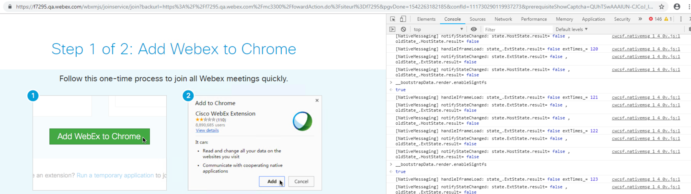
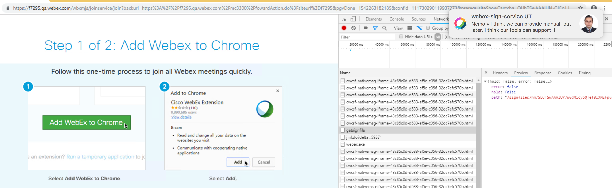

US39093 : Prepare for Graduation¶
New TA for F7295¶
- Project
- Train_Windows_client
- Component
- train_winclient
- Version
- 33.6.0
- Branch
- f7295
- Build Number
- 566
- Module
- GPC-Download
- Environment
- Download_TA_Env
- Mail To
Different Release UT Compare¶
Sign Service Telemetry¶
Every 5s, sign service will send the telemetry data to the server
- Telemetry Site
https://clhf1clw001.qa.webex.com/?dc=hflab&component=meeting
- account / password
- webexeng / webexeng
- Sign Service log and Telemetry log in server
- /opt/apache-tomcat_1/logs
- signservice.log
- telemetry.log
- logstash will commit telemetry data to kibana
- service logstash start
- Query keywords
- metrics-clap_rphf1-meeting-*
- host:jhm1tds101
- type:tdssvr
- telemetry.log
- kibana
- https://10.225.17.135/meeting/app/kibana#/discover?_g=()&_a=(columns:!(_source),index:’meeting-*‘,interval:auto,query:(match_all:()),sort:!('@timestamp‘,desc))
- metric data
host:jhm1tds101.qa.webex.com path:/opt/apache-tomcat_1/logs/telemetry.log component:meeting @timestamp:October 11th 2018, 15:22:26.475 @version:1 kafka_meta: { "topic":"hfqa1_logstash_meeting_hdfs", "consumer_group":"clap_rphf1", "partition":0, "offset":152667, "key":null, "timestamp":1539242546480 } eventtype:metrics metrics.requests:0 metrics.failed:0 metrics.success:0 metrics.timestamp:2018-10-11 07:22:26.232 type:tdssvr _id:LsDaX2rsxeRcw5T8L7G8ICsA== _type:tdssvr _index:metrics-clap_rphf1-meeting-2018.10.11 _score: -
- What is Telemetry Data for this new feature?
{ "timestamp" : " ", "requests" : " ", "success" : " ", "failed" : " " }
- What kind of usage, quality or diagnostic graph will come with this feature?
Failed case¶
| Test Suit | Test Case | f7295-5172 | 33.6.0-5195 | ||
| CCWSAppTest | RunWithMeetingParameter_TooLongFileName_ReturnFalse,0s,Failed >>> | ||||
| RunWithMeetingParameter_NormalFileName_ReturnTrue,0.015s,Failed >>> | |||||
| RunWithMeetingParameter_NormalFileName1_ReturnTrue,0s,Failed >>> | |||||
| RunWithMeetingParameter_NormalFileName_Duplicate_ReturnTrue,0s,Failed>>> | |||||
| RunWithMeetingParameter_ShortFileName_ReturnTrue,0s,Failed >>> | |||||
| RunWithMeetingParameter_ShortFileName1_ReturnTrue,0s,Failed >>> | |||||
| RunWithMeetingParameter_ShortFileName2_ReturnTrue,0s,Failed >>> | |||||
| RunWithMeetingParameter_ShortFileName3_ReturnTrue,0s,Failed >>> | |||||
| RunWithMeetingParameter_ShortFileName4_ReturnTrue,0s,Failed >>> | |||||
| RunWithMeetingParameter_ShortFileName5_ReturnTrue,0s,Failed >>> | |||||
| ProcessUrlProtocol_TooLong_ReturnTRUE,0s,Failed >>> | |||||
| ProcessUrlProtocol_OK_ReturnTRUE,0s,Failed >>> | |||||
| ProcessUrlProtocol_OK1_ReturnTRUE,0.016s,Failed >>> | |||||
| ProcessUrlProtocol_DocShow_ReturnTRUE,0s,Failed >>> | |||||
| CNotifyWndTest | preJME_HandlePluginNotifyMSG,0.078s,Failed | ||||
| CFrameworkTest | preJME_BasicTest_Run_emptyUrl,0.156s,Failed >>> | ||||
| preJME_BasicTest_RunTFS_ec,0.219s,Failed >>> | |||||
| preJME_BasicTest_RunTFS_tc,0.218s,Failed >>> | |||||
| preJME_BasicTest_RunTFS_sc,0.219s,Failed >>> | |||||
| JmeOnDemmandDownloadAdaptorTest | doDownloadFile,2.356s,Failed >>> | ||||
| JmeStandbyControllerTest | CheckAtmgrStandby_FALSE2,0.031s,Failed >>> | ||||
| CJmeSiteInfoManagerTest | TestLoadSiteConfig,0s,FailedATGpcExtension_Test >>> | ||||
| ATGpcExtension_Test | GetDefInstallDir_Flag1,0s,Failed >>> | n | |||
| GetDefInstallDir_Flag2,0s,Failed >>> | n | ||||
| CJmeUpdateMgr_LocalFileHelperTest | doInstallFile_checkInstallItemHash_ReturnFalse_FALSE,0s,Failed >>> | ||||
| doInstallFile_CheckWebExFileDigitalSignature_Failed_FALSE,0s,Failed >>> | |||||
| CEntrypointTest | preJME_Run_With_DocShow_download_failed,0.234s,Failed >>> | ||||
| preJME_Run_With_DocShow,0.234s,Failed >>> | |||||
| CJmeWorkflowInBrowserTest | PrepareForAtInstFiles_atinst_return_True,2.293s,Failed >>> | ||||
| CJmeClientVersionManagerTest | ScanExistFolder,0s,Failed >>> | ||||
| FindWorkingFolder,0.016s,Failed >>> | |||||
| MeetingLauncher_Test | GetLauncherForIE,0s,Failed >>> | n | |||
| CJmeJoinMeetingInfoTest | IsHighPrivilege,2.277s,Failed >>> | ||||
| IsMediumPrivilege,2.278s,Failed >>> | |||||
CCWSAppTest¶
- RunWithMeetingParameter_TooLongFileName_ReturnFalse 0s Failed >>>
- RunWithMeetingParameter_NormalFileName_ReturnTrue 0.015s Failed >>>
- RunWithMeetingParameter_NormalFileName1_ReturnTrue 0s Failed >>>
- RunWithMeetingParameter_NormalFileName_Duplicate_ReturnTrue 0s Failed >>>
- RunWithMeetingParameter_ShortFileName_ReturnTrue 0s Failed >>>
- RunWithMeetingParameter_ShortFileName1_ReturnTrue 0s Failed >>>
- RunWithMeetingParameter_ShortFileName2_ReturnTrue 0s Failed >>>
- RunWithMeetingParameter_ShortFileName3_ReturnTrue 0s Failed >>>
- RunWithMeetingParameter_ShortFileName4_ReturnTrue 0s Failed >>>
- RunWithMeetingParameter_ShortFileName5_ReturnTrue 0s Failed >>>
- ProcessUrlProtocol_TooLong_ReturnTRUE 0s Failed >>>
- ProcessUrlProtocol_OK_ReturnTRUE 0s Failed >>>
- ProcessUrlProtocol_OK1_ReturnTRUE 0.016s Failed >>>
- ProcessUrlProtocol_DocShow_ReturnTRUE 0s Failed >>>
CNotifyWndTest¶
- preJME_HandlePluginNotifyMSG 0.078s Failed
CFrameworkTest¶
- preJME_BasicTest_Run_emptyUrl 0.156s Failed
- preJME_BasicTest_RunTFS_ec 0.219s Failed >>>
- preJME_BasicTest_RunTFS_tc 0.218s Failed >>>
- preJME_BasicTest_RunTFS_sc 0.219s Failed >>>
JmeOnDemmandDownloadAdaptorTest¶
- doDownloadFile 2.356s Failed >>>
JmeStandbyControllerTest¶
- CheckAtmgrStandby_FALSE2 0.031s Failed
CJmeSiteInfoManagerTest¶
- TestLoadSiteConfig 0s Failed
ATGpcExtension_Test¶
- GetDefInstallDir_Flag1 0s Failed >>>
- GetDefInstallDir_Flag2 0s Failed >>>
CJmeUpdateMgr_LocalFileHelperTest¶
- doInstallFile_checkInstallItemHash_ReturnFalse_FALSE 0s Failed >>>
- doInstallFile_CheckWebExFileDigitalSignature_Failed_FALSE 0s Failed >>>
CEntrypointTest¶
- preJME_Run_With_DocShow_download_failed 0.234s Failed >>>
- preJME_Run_With_DocShow 0.234s Failed >>>
CJmeWorkflowInBrowserTest¶
- PrepareForAtInstFiles_atinst_return_True 2.293s Failed >>>
CJmeClientVersionManagerTest¶
- ScanExistFolder 0s Failed >>>
- FindWorkingFolder 0.016s Failed >>>
MeetingLauncher_Test¶
- GetLauncherForIE 0s Failed >>>
CJmeJoinMeetingInfoTest¶
- IsHighPrivilege 2.277s Failed >>>
- IsMediumPrivilege 2.278s Failed >>>
Dependencies¶
- Sign Server
- atboot.inc
- add a new item
- MJS
- read the new added config item from atboot.rnc
- if hadn’t found the item, means F7295 hadn’t ready
- J2EE Page
- J2EE post build
- Soft Link
- Mount Point
- Feature Toggle
- Coding in DBPatch
- Deploy with J2EE
- Add Feature Toggle
Super Admin
- Nemo own this
- fight fang
- Deploy time
- MJS
- 10+ Days
- J2EE Page
- 1 or 2 Months
Data Collect¶
- UT
- webex-windows-plugin
- webex-sign-service-tools
Test Case
- F7295-TFS Dynamic Sign-AWG Review
JME Telemetry¶
- IJmeTeleMetricMgr
- CJmeTeleMetricMgrImpl
- GetTelemetrtyInfo_FromGPC
- GpcTeleMetryInfo
- GetTelemetryInfo
- GetTelemetrtyInfo_FromGPC
- GpcTeleMetryInfo
- GetTelemetrytyInfo_FromDocShow
- Site/TeleMetryInfo
- GPC_JMTLOG
GPC_JMTLOG(“gpc#JMT1000#Java”)
Send Telemetry Data To Server
- JMTLOG_GETLOGDATA_JSON
- Generate Telemetry Json Format Data
- JmtLogDefines.h
- Define Telemetry Keyword
- WriteEntrypointImpl::WriteJmtLog_1000
- gpc#JMT1000#%s browserType
- Signed TFS Telemetry Client Item
- gpc#JMT1002#signedTFS
Q&A¶
- How to match Desktop app version to a specify component build version
- View the site
- Webex Meetings
- Downloads
- Web app version
- https://cctg-cirepo.cisco.com/cirepo/Train_Client/
- Locate to the object feature
- Find the feature package
- https://cctg-cirepo.cisco.com/cirepo/Train_Client/33.6.0.f7295/webex-client-packaging-33.6.0.566/bin/package.xml
- Feature toggle vs Atboot.inc
- toggle is control to enable/disable feature
- atboot.inc is for client backward compatible
- So, I agree move the toggle into superadmin.
- The toggle should be OFF by default, and can control by cluster?
- Deploy Type
Pool
Cluster
DC
Global
- F7295
- DC Level, confirmed with Nemo Zhu
- Sign Service has it’s own package
- https://cctg-cirepo.cisco.com/cirepo/webex_artifacts/server/webex-sign-service/1.0.0/webex-sign-service-1.0.0.94/
- MJS
- Pool Level
- Do we need skip any Special Clusters?
Federal: Clusters IM/IN
FedRAMP Clusters F/AF
China : Clusters IC/IV, IK/IL
WebEx11: Clusters AW/ET, BI/CU
MMN J2EE (PHP): Clusters BT8/BT9, IW/IX
- RE: Feature Toggle for Sign Server
From Fight Fang, mail
I think the important reason is Fedramp and China DC don’t support it, because web application current don’t have ability to control it.
- SVAT (Site Verification Test Automation)
- Confirmed with Fish Liu and Haoming
- Current SVAT just support Firefox(48 before or later) NPAPI and Extension solution
Confirmed with Silver, needn’t add new case for F7295
- MCT
- Confirmed with Calvin Yan, needn’t enhancement for F7295
- mct.webex.com
- After go to BTS or Prod, need open a case to mailto:csg-soc@cisco.com, to do health check
- Sign Service Dir
/opt/apache-tomcat_1/logs
signservice.log
telemetry.log
- Meeting Record
- How to verify feature toggle enable or not
- SQL Query
select * FROM WBXSITECONFIG WHERE ITEMNAME='EnableDynamicTFSSign' and siteid =883747; itemvalue =0 disable
- From Page : __bootstrapData.render.enableSigntfs

- How to check if MJS package support signed TFS from page
- getsignfile

- F7295 PMR Issue
When start meeting, it tips meeting ended
- Reset User PMR Config
- Site admin ->edit user-> uncheck Personal Room and check again
Sign Service Package¶
- How to check if Sign Service is available or not?
- http://10.252.53.218:8081/signservice/ping
- If available will return OKOKOK
- Sign Service Pack to RPM script
- buildlinuxrpmgen
- build will call rpmgen
CMC Config¶
- For more detail info need contract Bevis Duan
- He had given us a training
- certificateType: Hard Code
- default pem
- If need change, ScottX
- url
- pass to SignTool
- Basic needn’t change
- description
- Needn’t change
- RemoteStorageForSign
like destination in sign.properties
Shared Storage Dir, Sign Service use save the webex.exe file , MJS use to access the webex.exe file
10.224.17.251:/data/signservice, when the IP change need sync up
- current format
- {10.224.17.251:/data/signservice, /cluster1/signfiles}|{10.224.17.251:/data/signservice, /cluster2/signfiles}
Application¶
- Config File
CMC will use, just copy for Sign Service
Sign Service will use this config file
- Sign Tool will use this config item, sign.properties (in sign service repo)
- url
- description
- certificateType
- ph , current useless
- source, current useless
- certName, pass to KMS to get certificate
- destination, (JMS, SignService, SignTool will use to access or retrieve webex.exe), don’t change
/opt/webex/conf/webapps
- Package Installation Management
- WBXtomcat
- Script Definition
- Pre Install Action
- Before Install, We will uninstall first
- signservice
- sh shell
- Process Management
- Us this script to start or stop sign service
- the code in sign service repo
These items just copy from other service¶
- Tomcat will use this items
- server.xml
- web.xml
- catalina.policy
- context.xml
- catalina.properties
- webexapp.sh
20_signservice
healthcheck.sh
- java_signservice.conf
- seems JMX
- apptokenconfig.xml
Tomcat¶
- We just depend on Tomcat, for more detail info need contract Tomcat relevant owner
- Just Copy from Other Service
GCLog¶
- Enable
- NumberOfGCLogFiles
- GCLogFileSize
Box Type¶
- like server project name
- Nemo know this
- Seems Watson xu config
External Resource¶
- Other guys help us config
- SIS
Actions Definition¶
Template Macro¶
Advanced Options¶
KMS¶
Key Name, hard code or config
- Need send a request
- Nemo Zhu
- Sign Service , Build Key are the same
- Register Key Name
- Sign Service
Build already had included KMS jar package
- CMC
- Two Configures
- From Ren Bo
- Account Provisioning + Certificate Importing
KM Account
- From Bao jie
- After SingService deplyed in BTS/PRDO, ask tool team to provide the KM account info
- Bo Ren help to request account accesses grant to infosecurity team
- Service ower verify function or features
OCP vs VMWare¶
MAV(Metrics and Visualization)¶
cpu
memory
connect count or http
max process
- sign service metric
- request
- success
- failed
- error code
xnodemanager
Document For F7295¶
- F7295 Graduation link
- Design Document For F7295
https://cisco.app.box.com/s/x0ys1uqpf0ou4lg3439xztel6w5ffbpl
- https://wiki.cisco.com/display/CSGPMO/F7295+JMS+-+TFS+dynamic+sign
- CMC templete (Jie Bao, Bevis Duan, Hurst Li)
- MAV ( Angela Shao,Calvin Yan)
- Telemetry (use logstash, logstash deploy contact Jie Bao, QA Lab Telemetry Report contact Danny Yuan)
- Live Keep (CMC deploy)
- Private key import to KMS (Bo Ren)
- QA Env Site Deploy(Watson Xu), ATS Env Deploy (Bin Yang)
- J2ee CMC script update (Lyn Chen)
- F7295 Sign Service Server
- https://wiki.cisco.com/display/MSUS/F7295+TFS+Sign+Service+Dashboard
- BTS Pool
- Production Pool
J2EE Package Support TFS dynamic sign¶
- atboot.inc
EnableDynamicTFSSign = 1
When Run webex.exe will pop up “Windows protected your PC”¶
- Link
-
This is the Windows Smartscreen filter. It will stop reporting your certificate once it has been downloaded a number of times from different IP addresses. The only way around this is an EV certificate which requires a hardware dongle.
Meeting With Zhenyu Wang about MJS MOP¶
- Meeting Agenda
MJS CMC Config
How to verify Feature Toggle is enable or not
- F7295 MJS IP
- 10.224.43.95
- wbxroot/ wbx@AaR00t
- Recording
Meeting With Evan Xie Review MOP(1)¶
- Meeting Agenda
- Review F7295 MOP
- Recording
Meeting With Evan Xie Review MOP(2)¶
- Meeting Agenda
- Review F7295 MOP
- Recording
- MOP Invitee List
Evan Xie
Gordon Lee
- MSO
- Sean Cao
- Aier Huang
- Catherine Zhang
- Jeven Zhou
Allison Guo
- Provisioning Team
- Betty Yang
- Joy Wang
- Jane Jiang
Zhenyu Wang
Nemo Zhu
Walker Lan
Zina Zhou
Bo Ren
- Deployment
- hurst Li
- Awin li
Meeting with Zhenyu Wang about J2EE CMC¶
- Meeting Agenda
- Add three items for F7295 mount
- Recording
Meeting with Zhenyu, Yong Zhang to refine mount¶
- Meeting Agenda
- Refine J2EE Mount
- Refine MJS Mount
- Refine SignService Mount
- Recording
Meeting with Calvin to discuss MAV¶
- Meeting Agenda
- Where is the signservice data
- Recording
Meeting with Calvin, Allison to discuss MAV¶
- action
- mavclient 3.0.0.0_0018
- webdomain flag for sign service, feature enable check from db by cluster level
- telemetry add error code description
- add track ID in the next version
- chang send telemetry data strategy in the next version (one request one log)
Meeting with Yang Chen and Nick Zhong¶
- Agenda
- Discuss how to fill in mop release request
- Action
- Push MJS and J2EE Eng owner to create release request
- MJS release request
- J2EE release request
- New Sign Service release request
New service signsiervice need to review with Gordon team to prepare the release in RMP
- Recording
- MOP Release Process
Meeting with Evan Xie¶
- Agenda
- How to add a new component in RMP
- Recording
MJS call Sign Service : HTTP => HTTPS¶
modify MJS CMC config
modify MJS CMC shell script
modify VIP config
certificate import in loadbalance
- verify
- telnet signservice-hm.qa.webex.com 443
Test Servers¶
- VIP: 10.224.45.21, signservice-hm.qa.webex.om
- jhm1tds101
- 10.224.43.143
- jhm1tds102
- 10.224.43.160
- VIP: 10.224.45.22, signservice-hm-ocp.qa.webex.om
- jhm1ds201tds001
- 10.224.100.20
- jhm1ds201tds002
- 10.224.100.15
- NA, NA
- jhm1tds001
- 10.224.43.138
Action¶
- need discuss with cloud service team
- if production with deploy APPD or New Relic
- current plan New Relic transfer to APPD
- APPD or New Relic need consider performance issue
JVM thread jitter is a little big
MOP Request¶
- Push MJS and J2EE Eng owner to create release request
- MJS release request
- J2EE release request
- New Sign Service release request
New service signsiervice need to review with Gordon team to prepare the release in RMP
Logstash¶
- server config location
/etc/logstash/conf.d
vi logstash_central.conf
*_logstash_%(component)_hdfs
- logstash_app.conf
- type: tdssvr
- component: meeting
Reference¶
- Feature Toggle build fail yesterday
- Coding just check in master @2018.11.6 10:35
- F7295 Super Admin
- hmsuper.qa.webex.com
- admin/pass
- reStructuredtext table
- http://www.tablesgenerator.com/text_tables#
- Windows protected your PC
- Release full Workflow control model
- Release Management Portal Project
- TFS sign server security check
- Super Admin
nick/nickpass
- Enable Feature Toggle For F7295
- Tools => Batch Enable Tool
- Qlik
https://wiki.cisco.com/pages/viewpage.action?pageId=188844815
- Request Qlik Account
- Client Package
- Avoid “Windows protected your PC” message for a authenticode cert signed install4j installer
- MAV
- http://mav.webex.com/
- Calvin Yan
- JIRA Training
- Recording
- logstash cmc
- My Components
- 5.6.2
- 1812
- CMC From rmc to download package
- Weekly Update
- MAV, had discussed with Alison, Calvin
- mavclient
- connectd data is ok
- mav view array is not friendly
- errorcode will use telemetry
- next version, will change mav logic
- Scope don’t clear, Report
- CATO
- xalan
- logstash
- Performance test
- current hadn’t complete
- kibana and mav site can’t receive data
- MOP
- basically complete
- had review with Evan Xie and Allison
- The challenge
- Test Env & CMC
- not stable